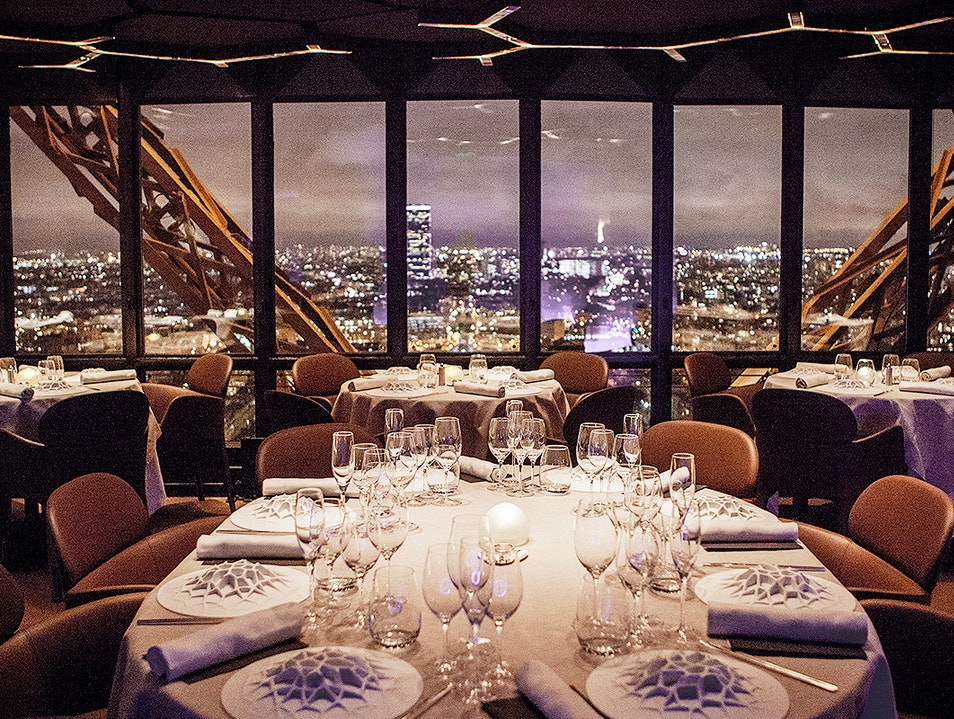
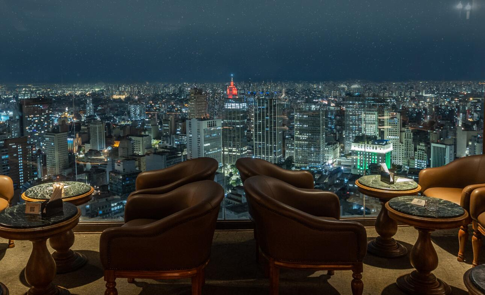

Destinos Famosos
Le Jules Verne
Paris, França

Esse restaurante fica dentro da Torre Eiffel e é um dos restaurantes mais famosos de Paris. Ele é conhecido pela vista panorâmica da cidade e pela culinária francesa sofisticada.
Avaliações
Marcos
⭐⭐⭐⭐⭐“Vista incrível da Torre Eiffel e comida excelente.”
Junior
⭐⭐⭐⭐⭐“Comida excelente e atendimento muito bom.”
Amanda
⭐⭐⭐⭐⭐“Vista Espetacular.”
Terraço Italia
São Paulo, Brasil

O Terraço Itália é um dos restaurantes mais icônicos de São Paulo, conhecido por sua atmosfera sofisticada, culinária italiana refinada e uma vista panorâmica espetacular da cidade.
Avaliações
Lopes
⭐⭐⭐⭐⭐“Vista incrível do Terraço Italia”
Mc Ig
⭐⭐⭐⭐⭐“Excelente Atendimento”
Bolzani
⭐⭐⭐⭐“Preços altos”